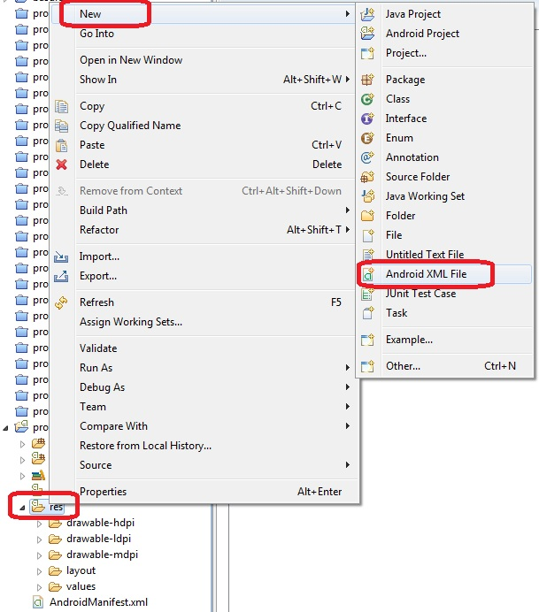
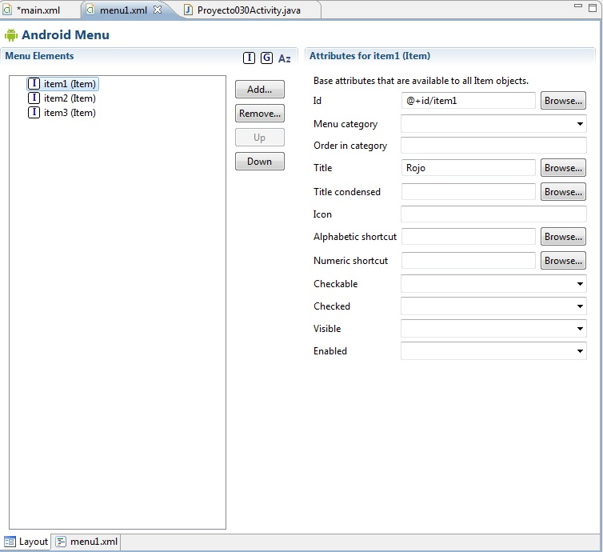

32 - Menú contextualesYa se encuentra disponible el nuevo tutorial para aprender android con el nuevo entorno Android Studio propuesto por Google y que remplaza a Eclipse. |
Otra variante de menú de opciones son los menú contextuales que se pueden asociar a distintos componentes visuales del formulario (TextView, EditText, ListView etc.)
Un menú contectual aparece cuando el usuario presiona por un tiempo más o menos prolongado el control visual.
Confeccionar una aplicación que muestre un EditText y asociarle un menú contextual que permita cambiar el color de fondo del mismo. El menú debe permitir seleccionar entre el rojo, verde y azul.
Primero creamos un proyecto y creamos una interfaz con un control de tipo EditText:
Luego creamos el archivo XML que contendrá el menú de opciones (presionamos el botón derecho del mouse sobre la carpeta res de nuestro proyecto y seleccionamos New -> Android XML File):
Aparece un diálogo donde debemos indicar el nombre del archivo de recursos a crear (lo llamamos menu1, este es el nombre del archivo XML que se creará en una carpeta llamada menu que depende de la carpeta res) y seleccionamos el RadioButton de menu
Ya tenemos una nueva carpeta llamada menu y un archivo llamado menu1.
Creamos las tres opciones del menú:
Ahora veamos como asociar el archivo XML donde definimos el menú con el código Java:
package androidya.proyecto030;
import android.app.Activity;
import android.graphics.Color;
import android.os.Bundle;
import android.view.ContextMenu;
import android.view.ContextMenu.ContextMenuInfo;
import android.view.MenuInflater;
import android.view.MenuItem;
import android.view.View;
import android.widget.EditText;
public class Proyecto030Activity extends Activity {
EditText et1;
/** Called when the activity is first created. */
@Override
public void onCreate(Bundle savedInstanceState) {
super.onCreate(savedInstanceState);
setContentView(R.layout.main);
et1=(EditText)findViewById(R.id.editText1);
registerForContextMenu(et1);
}
@Override
public void onCreateContextMenu(ContextMenu menu, View v,ContextMenuInfo menuInfo)
{
menu.setHeaderTitle("Elija el color de fondo:");
MenuInflater inflater = getMenuInflater();
inflater.inflate(R.menu.menu1, menu);
}
@Override
public boolean onContextItemSelected(MenuItem item) {
switch (item.getItemId()) {
case R.id.item1:et1.setBackgroundColor(Color.rgb(255, 0, 0)) ;
break;
case R.id.item2:et1.setBackgroundColor(Color.rgb(0, 255, 0)) ;
break;
case R.id.item3:et1.setBackgroundColor(Color.rgb(0, 0, 255)) ;
break;
}
return true;
}
}
En el método onCreateContextMenu asociamos el archivo XML llamando al método inflate de la clase MenuInflate.
Podemos también llamar al método setHeaderTitle para mostrar un título en el menú emergente.
@Override
public void onCreateContextMenu(ContextMenu menu, View v,ContextMenuInfo menuInfo)
{
menu.setHeaderTitle("Elija el color de fondo:");
MenuInflater inflater = getMenuInflater();
inflater.inflate(R.menu.menu1, menu);
}
Para la captura de eventos de los MenuItem debemos implementar el método onContextItemSelected donde mediante un switch verificamos cual de los MenuItem fue seleccionado y cambiamos el color de fondo del control EditText:
@Override
public boolean onContextItemSelected(MenuItem item) {
switch (item.getItemId()) {
case R.id.item1:et1.setBackgroundColor(Color.rgb(255, 0, 0)) ;
break;
case R.id.item2:et1.setBackgroundColor(Color.rgb(0, 255, 0)) ;
break;
case R.id.item3:et1.setBackgroundColor(Color.rgb(0, 0, 255)) ;
break;
}
return true;
}
Este proyecto lo puede descargar en un zip desde este enlace: proyecto030.zip